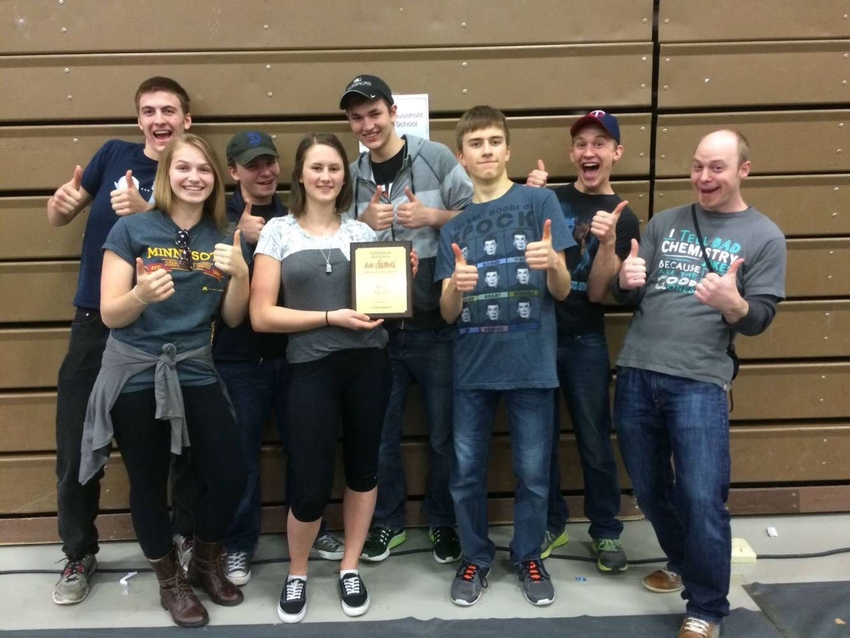
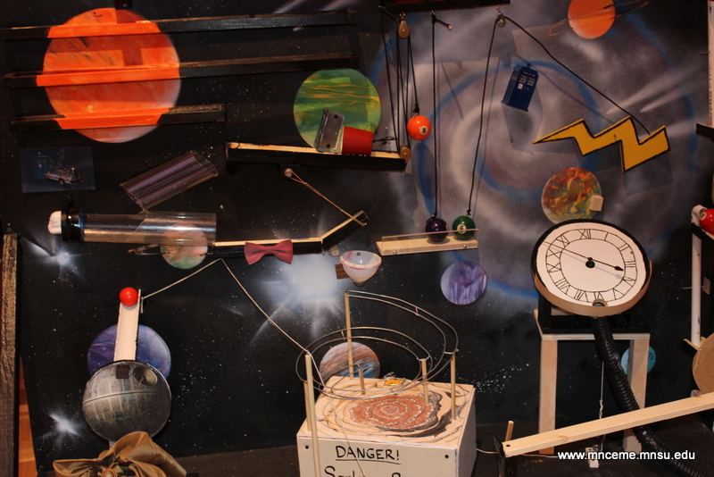
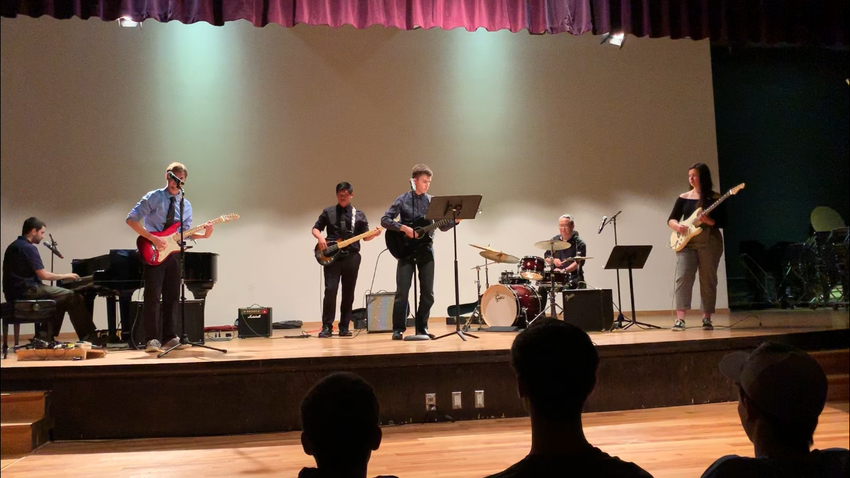
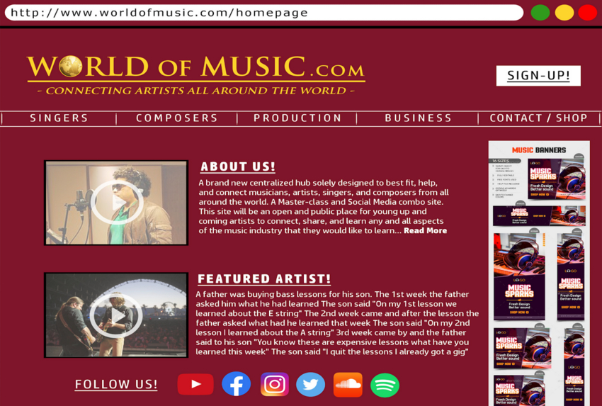

| Home | Projects | Resume | Fun/Misc. |
During my sophomore year of high school, our physics class was split into teams to compete in that year's high school Rube Goldberg contest, where the last step was to open an umbrella. My team built a machine themed around sci-fi, as the picture below shows. We won second place at regionals, meaning we advanced to the final contest in Wisconsin. We didn't really stand out performance-wise in that round, but it was still a fun experience all around.
 In Spring 2019, I was part of the university's Popular Music Ensemble (the first one that they did if I remember correctly). The experience was a lot less organized than the Guitar Ensemble, which I have also taken part in regularly. A large part of that had to do with the small size. You see those six people on stage in the picture? That was everyone, us five and the instructor (on drums in the picture). As a result, we all had more power over what direction the ensemble, and the performance at the end of the semester, were going to take, so it felt more like a project than any other musical group experience I've had here at St. Thomas.
Last year, for the midterm project in our Intro to Music Business course, we were split into groups to come up with a business idea to help fix some issue we found with the music industry. The group I was assigned to came up with a Skillshare-type website for aspiring musicians to learn more about their craft of choice and to network with fellow musicians. Keep in mind that we didn't actually make the website. After the midterm presentations, we presented our business concept to the annual Fowler Business Concept Challenge held here at St. Thomas.
